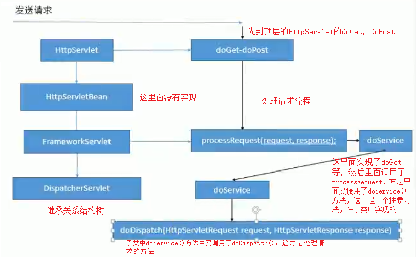
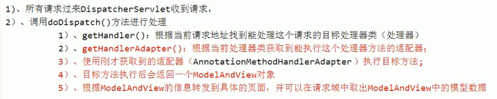

protected void doDispatch(HttpServletRequest request, HttpServletResponse response) throws Exception {
HttpServletRequest processedRequest = request;
HandlerExecutionChain mappedHandler = null;
boolean multipartRequestParsed = false;
WebAsyncManager asyncManager = WebAsyncUtils.getAsyncManager(request);
try {
ModelAndView mv = null;
Exception dispatchException = null;
try {
// 1. 检查当前请求是否是文件上传请求
processedRequest = checkMultipart(request);
multipartRequestParsed = (processedRequest != request);
// Determine handler for the current request. 确定当前请求的处理程序。
// 2. 根据当前请求找到哪个类能来处理(处理映射器)
mappedHandler = getHandler(processedRequest);
// 3. 如果没有找到对应的处理器，就抛出异常或者跳转到404页面
if (mappedHandler == null) {
noHandlerFound(processedRequest, response);
return;
}
// Determine handler adapter for the current request. 确定当前请求的处理程序适配器。(处理适配器)
// 4. 找到能执行这个类的所有方法的适配器(反射工具)
HandlerAdapter ha = getHandlerAdapter(mappedHandler.getHandler());
// Process last-modified header, if supported by the handler. 如果处理程序支持，则处理最后修改的标头。
// 获取请求方式
String method = request.getMethod();
boolean isGet = "GET".equals(method);
if (isGet || "HEAD".equals(method)) {
long lastModified = ha.getLastModified(request, mappedHandler.getHandler());
if (new ServletWebRequest(request, response).checkNotModified(lastModified) && isGet) {
return;
}
}
if (!mappedHandler.applyPreHandle(processedRequest, response)) {
return;
}
// Actually invoke the handler. 实际调用处理程序,调用处理器的方法
// 5. 真正调用controller的方法，使用适配器来执行目标方法，将执行完方法后的返回值作为视图名，存在ModelAndView中(后端处理器)
mv = ha.handle(processedRequest, response, mappedHandler.getHandler());
if (asyncManager.isConcurrentHandlingStarted()) {
return;
}
// 如果没有视图名 就设置一个默认的视图名
applyDefaultViewName(processedRequest, mv);
mappedHandler.applyPostHandle(processedRequest, response, mv);
}
catch (Exception ex) {
dispatchException = ex;
}
catch (Throwable err) {
// As of 4.3, we're processing Errors thrown from handler methods as well,
// making them available for @ExceptionHandler methods and other scenarios.
dispatchException = new NestedServletException("Handler dispatch failed", err);
}
// 6. 渲染页面， 根据封装的mv，转发到对应页面(视图解析器 )
processDispatchResult(processedRequest, response, mappedHandler, mv, dispatchException);
}
catch (Exception ex) {
triggerAfterCompletion(processedRequest, response, mappedHandler, ex);
}
catch (Throwable err) {
triggerAfterCompletion(processedRequest, response, mappedHandler,
new NestedServletException("Handler processing failed", err));
}
finally {
if (asyncManager.isConcurrentHandlingStarted()) {
// Instead of postHandle and afterCompletion
if (mappedHandler != null) {
mappedHandler.applyAfterConcurrentHandlingStarted(processedRequest, response);
}
}
else {
// Clean up any resources used by a multipart request.
if (multipartRequestParsed) {
cleanupMultipart(processedRequest);
}
}
}
}

protected HandlerExecutionChain getHandler(HttpServletRequest request) throws Exception {
if (this.handlerMappings != null) {
for (HandlerMapping mapping : this.handlerMappings) {
HandlerExecutionChain handler = mapping.getHandler(request);
if (handler != null) {
return handler;
}
}
}
return null;
}
protected HandlerAdapter getHandlerAdapter(Object handler) throws ServletException {
if (this.handlerAdapters != null) {
for (HandlerAdapter adapter : this.handlerAdapters) {
if (adapter.supports(handler)) {
return adapter;
}
}
}
throw new ServletException("No adapter for handler [" + handler +
"]: The DispatcherServlet configuration needs to include a HandlerAdapter that supports this handler");
}
/** MultipartResolver used by this servlet.文件上传解析器*/
@Nullable
private MultipartResolver multipartResolver;
/** LocaleResolver used by this servlet. 区域信息解析器，和国际化有关*/
@Nullable
private LocaleResolver localeResolver;
/** ThemeResolver used by this servlet.主题解析器 */
@Nullable
private ThemeResolver themeResolver;
/** List of HandlerMappings used by this servlet. 处理映射器*/
@Nullable
private List<HandlerMapping> handlerMappings;
/** List of HandlerAdapters used by this servlet. 处理适配器 */
@Nullable
private List<HandlerAdapter> handlerAdapters;
/** List of HandlerExceptionResolvers used by this servlet. 异常处理解析器 */
@Nullable
private List<HandlerExceptionResolver> handlerExceptionResolvers;
/** RequestToViewNameTranslator used by this servlet. 请求地址到视图名字转换器 */
@Nullable
private RequestToViewNameTranslator viewNameTranslator;
/** FlashMapManager used by this servlet. SpringMVC中运行重定向携带数据的功能 */
@Nullable
private FlashMapManager flashMapManager;
/** List of ViewResolvers used by this servlet. 视图解析器 */
@Nullable
private List<ViewResolver> viewResolvers;
初始化九大组件的方法
protected void initStrategies(ApplicationContext context) {
initMultipartResolver(context);
initLocaleResolver(context);
initThemeResolver(context);
initHandlerMappings(context);
initHandlerAdapters(context);
initHandlerExceptionResolvers(context);
initRequestToViewNameTranslator(context);
initViewResolvers(context);
initFlashMapManager(context);
}